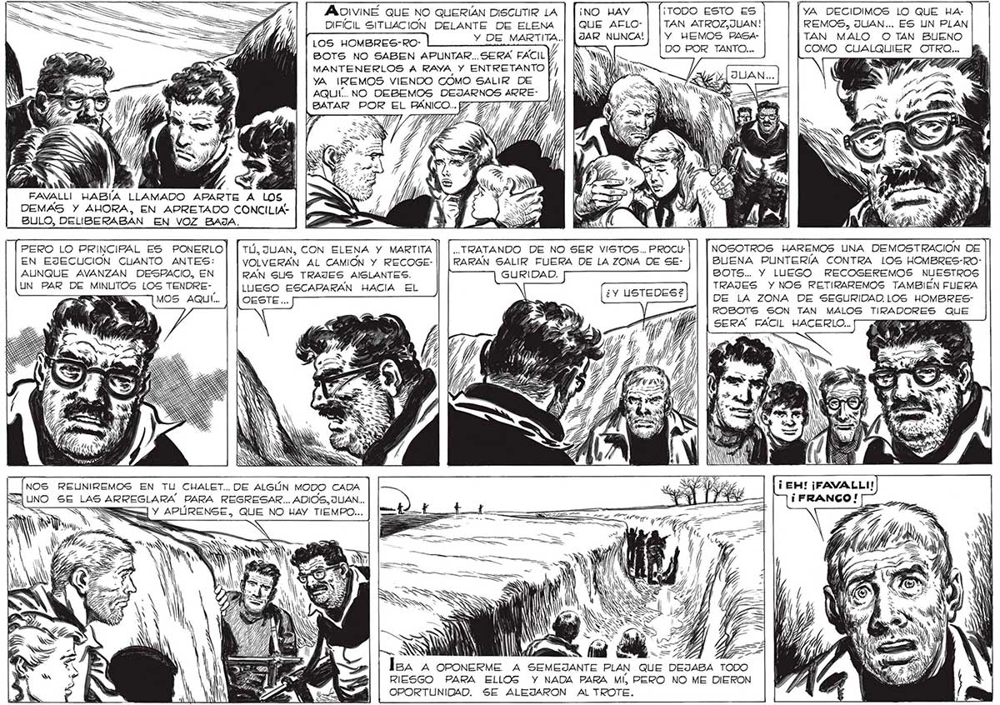

346 ADIVINÉ QUE NO QUERÍAN DISCUTIR LA | |¡no HAY ¡TODO ESTO ES YA DECIDIMOS LO QUE HADIFÍCIL SITUACION DELANTE DE ELENA | |QUE AFLO- | [TAN ATROZ,JUAN! REMOS, JUAN... ES UN PLAN Y DE MARTITA..| [AR NUNCA!| [Y WEMOS PASA- TAN MALO O TAN BUENO LOS HOMBRES-ROSOTS NO SABEN APUNTAR.. SERA FACIL) nm ro E 0 RUBALLOS Sllehds MANTENERLOS A RAYA Y ENTRETANTO YA REMOS VIENDO COMO SALIR DE . Ss Y Vel AQUÍ... NO DEBEMOS DEJARNOS ARRE- |/ INIA Ñ E BATAR POR EL PÁNICO... TICA A <A ASS AN e FAVALLI HABÍA LLAMADO APARTE A LOS DEMAS Y AHORA, EN APRETADO CONCILIABULO, DELIBERABAN EN VOZ BAJA, PERO LO PRINCIPAL ES PONERLO| | TÚ, JUAN, CON ELENA Y MARTITA [| |..TRATANDO DE NO SER VISTOS.. PROCU: NOSOTROS HAREMOS UNA DEMOSTRACION DE EN EJECUCION CUANTO ANTES: VOLVERÁN AL CAMION Y RECOGE- || | RARÁN SALIR FUERA DE LA ZONA DE SE- BUENA PUNTERÍA CONTRA LOS HOMBRES-ROAUNQUE AVANZAN DESPACIO, EN RAN SUS TRAJES AISLANTES. BOTS... Y LUEGO RECOGEREMOS NUESTROS UN PAR DE MINUTOS LOS TENDRE- LUEGO ESCAPARAN HACIA EL TRAJES Y NOS RETIRAREMOS TAMBIEN FLIERA MOS AQUÍ... DE LA ZONA DE SEGURIDAD.LOS HOMBRESROBOTS SON TAN MALOS TRADE QUE SERA FACIL HACERLO... NOS RELUNIREMOS EN TU CHALET... DE ALGÚN MODO CADA q UNO SE LAS ARREGLARA PARA REGRESAR... ADIOS, JUAN... S A Ñ Pm. AV Va AA AF — A tri eS. MN Ñ SS > E PS . l NS A HG hal Le =% lga A OPONERME A SEMEJANTE PLAN QUE DEJABA TODO RIESGO PARA ELLOS Y NADA PARA MÍ PERO NO ME DIERON OPORTUNIDAD. SE ALEJARON AL TROTE.
